足あとの年表
猫の目印と足あとで思い出をたどれます。年の間隔もひと目でわかり、テーマは自由。年表はいくつでも作れます。
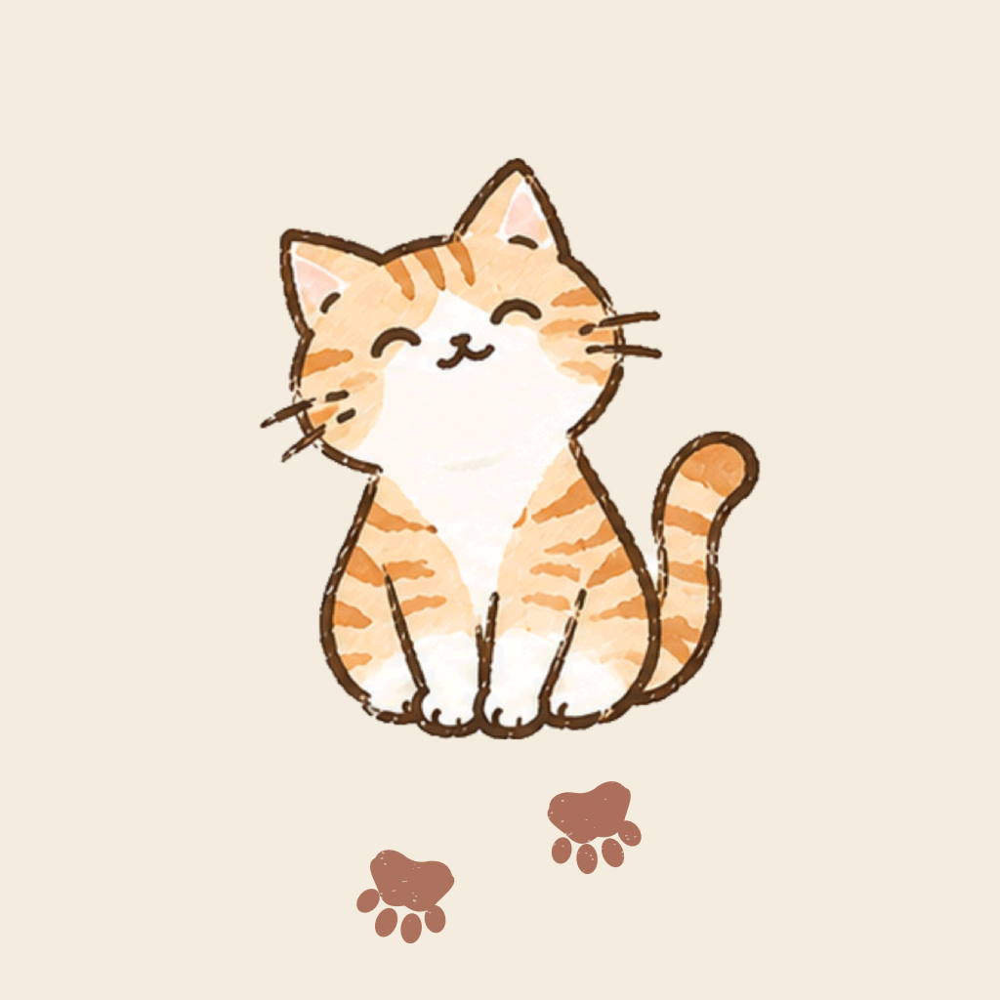
ASHIATO NENPYO / iPhoneアプリ思い出を足あとの年表に
推しも、旅も、うちの子も。思い出が猫の目印になって、肉球の足あとでつながります。猫といっしょに歩きながら、ひとつずつふりかえれます。
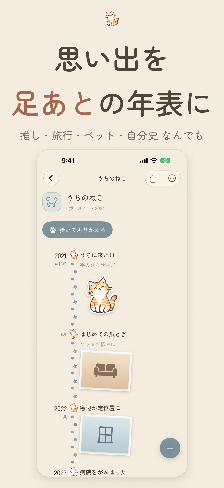
足あとの年表を作って、猫と歩いてふりかえる。会員登録はいりません。記録や写真はiPhoneの中だけに保存されます。
猫の目印と足あとで思い出をたどれます。年の間隔もひと目でわかり、テーマは自由。年表はいくつでも作れます。
猫が足あとを歩くと、出来事がひとつずつ現れて「いま」に着きます。ふりかえりの再生は無料です。
いつもの・黒猫・白猫・茶トラ・ハチワレ・長毛の6柄はすべて無料。年表ごとに好きな猫をえらべます。
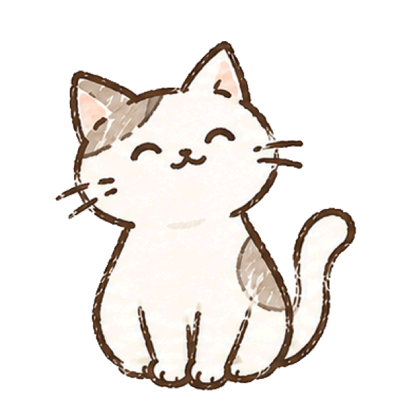
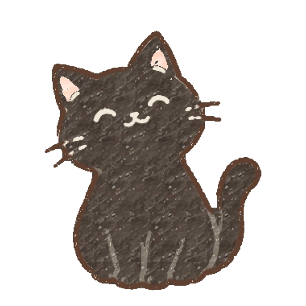
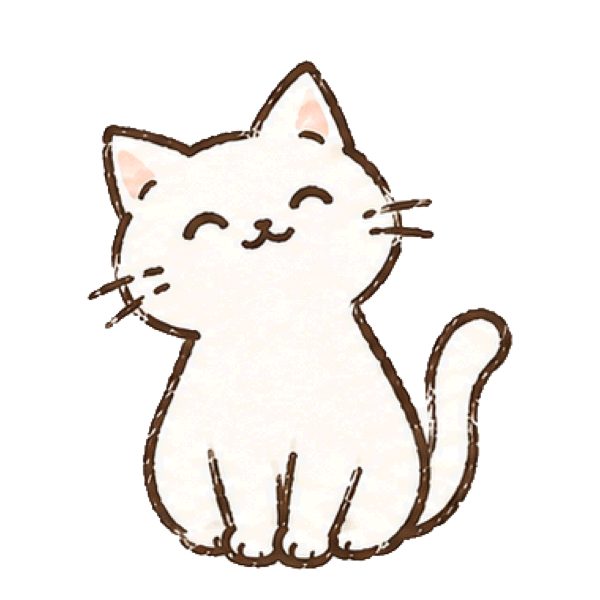
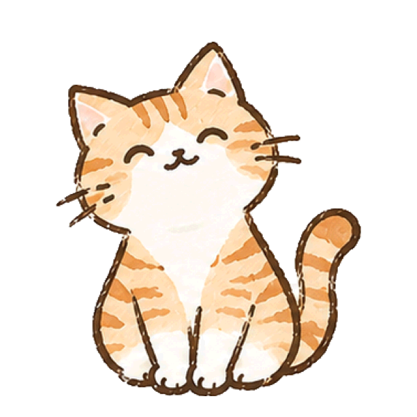
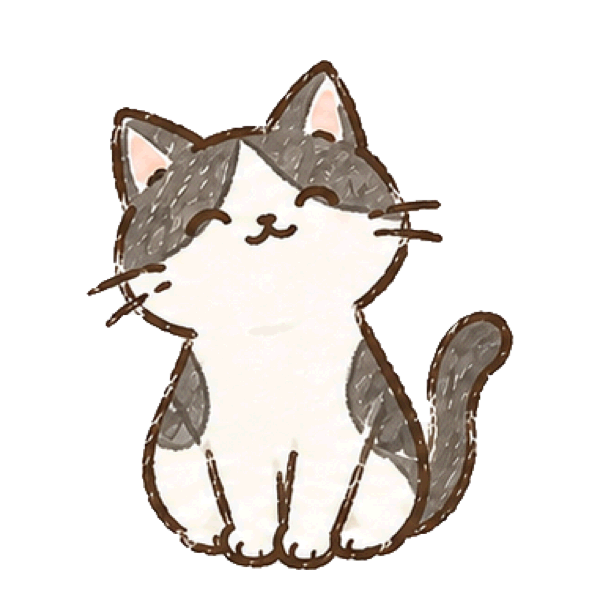
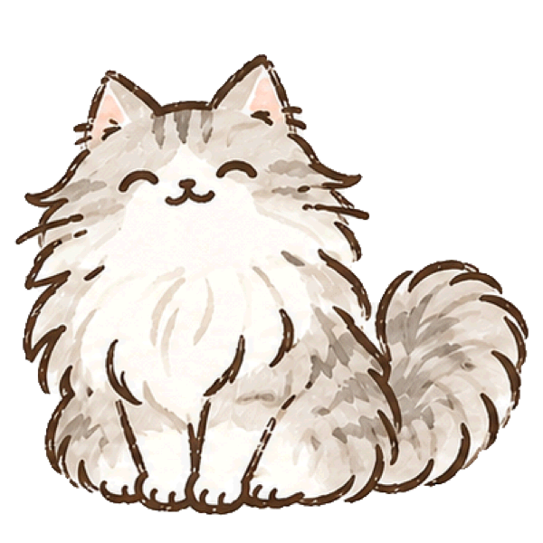
同じ年の思い出を横に並べて見られます。2つは無料、3つはねこパス。比較画像の共有も無料です。
人やペット、モノを切り抜いて貼れます。切り抜きはiPhoneの中で行い、無料で使えます。
「年だけ」「季節」「年月」「年月日」から選べます。「2015年ごろ」のように、覚えているところまでで大丈夫。
年表を縦長の画像で共有できます。写真を含むすべての年表を1つのファイルにバックアップする機能も無料です。
課金はこの1つだけ。設定の「おみせ」から購入できます。
記録・写真の切り抜き・バックアップ・すべての猫の柄は無料です。
最初の画面の「サンプルを見てみる」から、すぐに試せます。
推し・旅・うちの子・自分史など、お題を選んではじめられます。自由なテーマでも作れます。
覚えている日付と出来事を入力。写真を貼ったり、年表ごとに猫の柄をえらんだりできます。
年表の「歩いてふりかえる」をタップ。猫といっしょに、思い出を順番にたどれます。
共有画面から年表の画像を書き出せます。ねこパスなら、ふりかえりの最後の「動画で保存」も使えます。
あしあと年表の主な画面です。
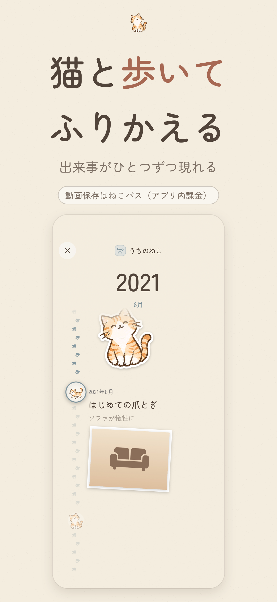
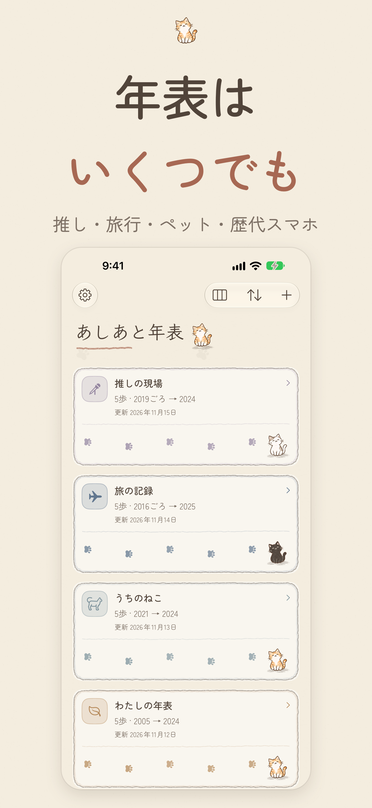
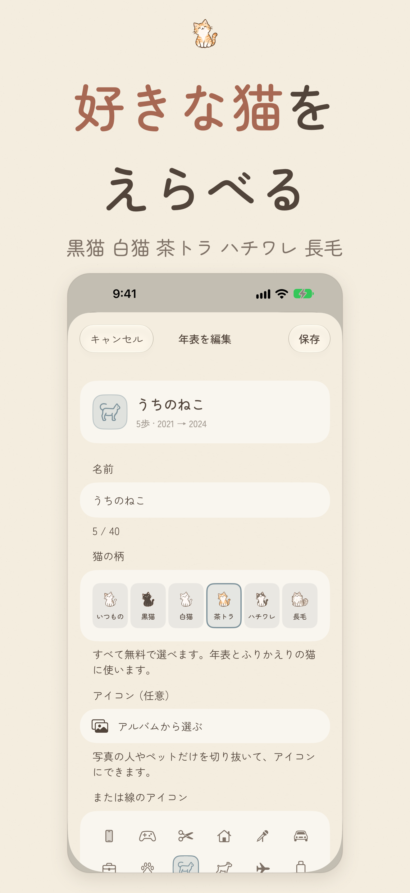
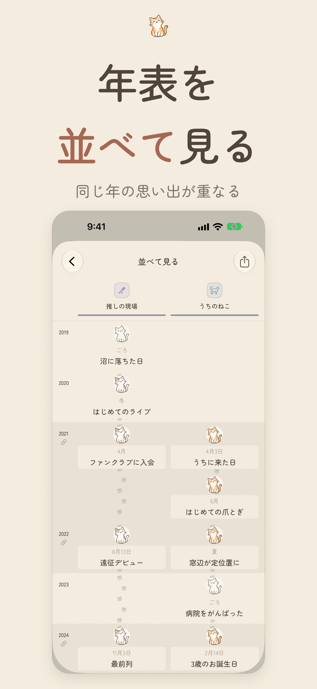
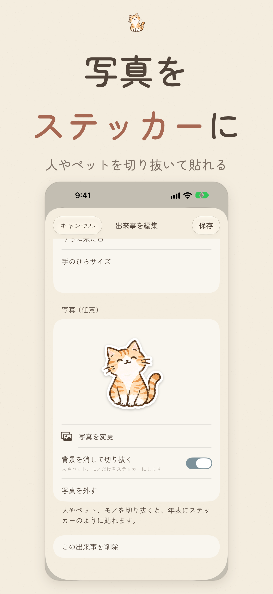
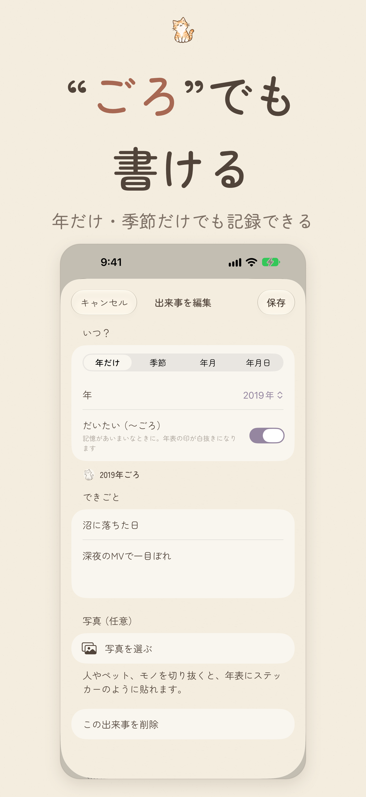
使い方やご購入についてのご案内です。
「年だけ」「季節」でも保存できます。「だいたい（〜ごろ）」をオンにすると「2015年ごろ」と表示されます。
設定の「バックアップを書き出す」で、写真を含むすべての年表を1つのファイルに保存できます。新しいiPhoneでは「バックアップから復元」を選んでください。
設定または「おみせ」の「購入を復元」をお試しください。購入時と同じApple IDでサインインしている必要があります。
人やペット、モノがはっきり写った写真がおすすめです。切り抜けない場合は「背景を消して切り抜く」をオフにすると、そのまま貼れます。
お問い合わせとプライバシーポリシー。